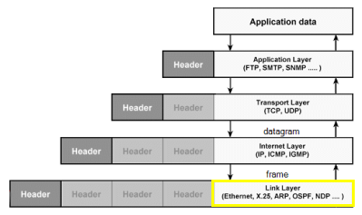

Link Layer
switches are
Link Layer devices that are deputies to send
frames(name of the packets on the Link Layer level) on the local network
MAC address
•
IP addresses are used on the
Internet Layer to identify a
host on a network
•
MAC addresses are used on the
Link Layer to uniquely identify a
network card in the world
MAC (
Media
Access
Control) address is also known as →
physical addressMAC address is of 48 bit (6 bytes) and are expressed in hexadecimal numbers (HEX).
Each hexadecimal number uses 4 bit, each of these 2 hexadecimal numbers form a group(group= 2 numbers of 4 bits=8bit) and in a MAC address there are 6 groups separated by a colon(:).
These 6 hexadecimal groups(8bit x 6=48bit) form a MAC address
example: 00:11:AA:22:EE:FF
To know the MAC address we can use:
•
Windows: ipconfig /all
•
*nix operating systems(es: MacOS): ifconfig
• Linux: ip addr